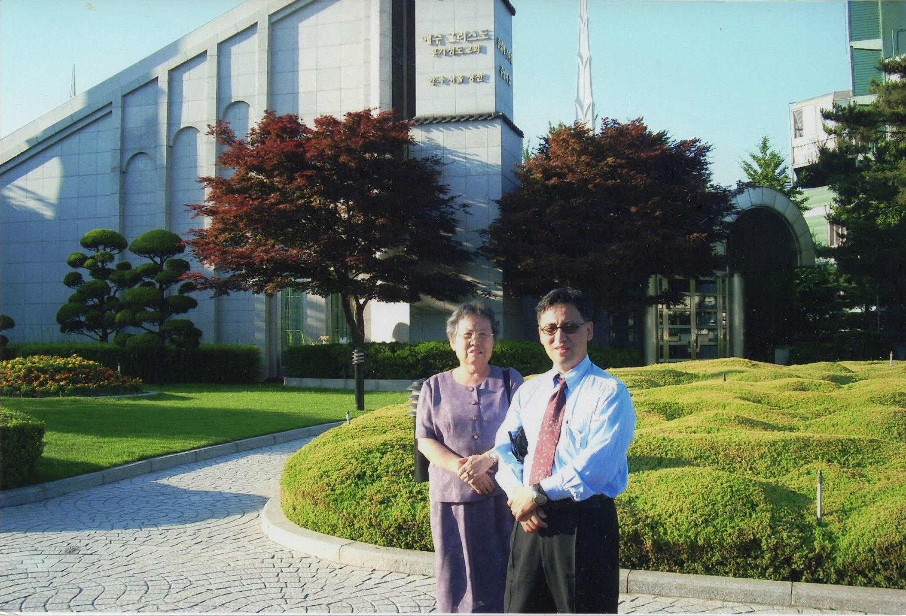

Accordion playing doctor.
That would have been my hobby and the profession, if I fulfilled my mom’s wishes
Accordion player, to follow in the musical traditions of North Korean1.
And the western medicine doctor, to continue the Hwang family tradition, of at least one doctor per generation2.
However, my mother recognized that I neither had the desire or willing to develop the skill to take up either one of those worthy pursuits.
So she pivoted.
She invoked the sayings of honey selling grandma.
Most Koreans are familiar with the story of 한석봉.
A single mother sends away a son for 10 years.
For he showed talent in calligraphy.
Son returns after 3 years because he missed home and felt he had learned enough.
Mother turns off the oil lamp and proposes a test.
She would slice the rice cake she sells to support the family. Her son would write with brush on paper in the dark.
When the light was turned on again. The son’s writing was uneven and not recognizable. Mom’s sliced rice cakes were evenly sliced.
The returned to his studies, finished the last 7 years of his study. He became one of the most celebrated scholar of his generation and beyond.

I disappointed my mother many times by not listening or not following up on her wishes.
I probably failed in many practical exams, not recognizing they were life’s exams. Like 한석봉’s mother, she could out perform in many ways but she always encouraged me.
Thereby fostering in me, nascent skills and made them into lifelong skills or talents.
The honey selling grandma visited my mother, who was expecting and in debt. “This family will prosper, and your neighbors will say,”
사람 팔자는 시간문제3
She further predicted that my father will work overseas and your finance will improve dramatically and that you will have a son, and that son will have as much as education as he desires.
My mother couldn’t hardly believe these words and waved them off.
She returned later to confirm if her predictions came true.
My mother treated her more kindly.
My father had left for Vietnam and I had been born.
During college days, when I struggled through classes, I remembered those words of my mother used to tell me.
I took comfort in knowing that my mother believed in me and that a way would be open for me to gain education and find a gainful employment.
That was a stretch, considering I was married, expecting a child and an employment seemed like a dream.
Thank you mom for giving me that guidance and encouragement, for it helped me through difficult times.
Heard that story about the honey seller many times growing up.
I have no way of confirming whether that story happened4.
Equally, I have no reason to believe my mother would tell me a non-factual story.
The story about 한석봉 would not be widely told, had he not returned back to his studies.
I have a story to complete so the words of the honey selling grandma and my mother’s encouraging words would all be fulfilled.
Like all mothers, mother not only lifted us to be better.
But she also brought the heaven bit closer to us and reminded of our standing.
Or the heavenly and earthly relationships that we develop within this vast universe.
天長地久

Appendix
The Korean version of the story.
한석봉의 어머니는
떡장수를 해서
석봉에게 글씨 공부를
10년간 시킵니다.
출가하여 공부하던 석봉은
3년 만에 모친이 보고 싶어서
집으로 돌아왔습니다.
모친은 호롱불을 끄고
자신은 떡을 썰고
석봉은 글씨를 쓰게 했습니다.
불을 켜 보니 모친의 떡은
보기 좋게 썰어져 있었으나
석봉의 글씨는 엉망입니다.
모친은 석봉을 야단쳐서
다시 산으로 보냅니다.
결국 석봉은 남은 7년을 채워
문자 그대로 10년 공부를 해서
조선의 명필이 되었습니다.
Appendix 2
The accordion has become a popular musical instrument in North Korea due to several cultural, historical, and educational factors:
Cultural Promotion: The North Korean government has actively promoted the accordion as a symbol of revolutionary spirit and cultural pride. Kim Il-sung, the founding leader of North Korea, was known to have played the accordion, and this association with the country’s leadership helped elevate the instrument’s status.
Educational System: The accordion is widely taught in North Korean schools. It is considered a practical and portable instrument that can be used to play both traditional Korean music and revolutionary songs. The government’s emphasis on music education includes making the accordion a standard part of the curriculum, ensuring that many children learn to play it from a young age.
Military and Political Significance: The accordion is often used in military and political events. Its portability makes it suitable for performances in various settings, from formal ceremonies to outdoor gatherings. It has become a staple at rallies, parades, and other state-sponsored events where patriotic and revolutionary songs are performed.
Cultural Identity: In North Korea, the accordion is seen as part of the country’s cultural identity. It is featured in numerous cultural performances and is often depicted in state media as a symbol of the hardworking, joyful, and revolutionary spirit of the North Korean people.
Propaganda Tool: Music, including accordion music, is used as a tool for propaganda in North Korea. Songs played on the accordion often carry political messages and are used to instill loyalty to the regime and its leaders.
Community and Unity: The accordion is also seen as an instrument that brings people together. Group performances and sing-alongs featuring the accordion are common, fostering a sense of community and unity among participants.
Overall, the popularity of the accordion in North Korea is a result of deliberate state policies aimed at promoting certain cultural values and fostering a sense of national identity. The instrument’s portability, versatility, and historical associations with the country’s leadership have all contributed to its prominent place in North Korean society.
Footnotes
https://www.mprnews.org/story/2012/03/23/north-korea-accordionists↩︎
My aunt’s second son fulfilled that role↩︎
This refers to the fact that a person’s fate can change in an instant, so it is impossible to know what the future will be like. Source: University Journal (https://m.dhnews.co.kr)↩︎
my father confirmed that he also met this lady↩︎